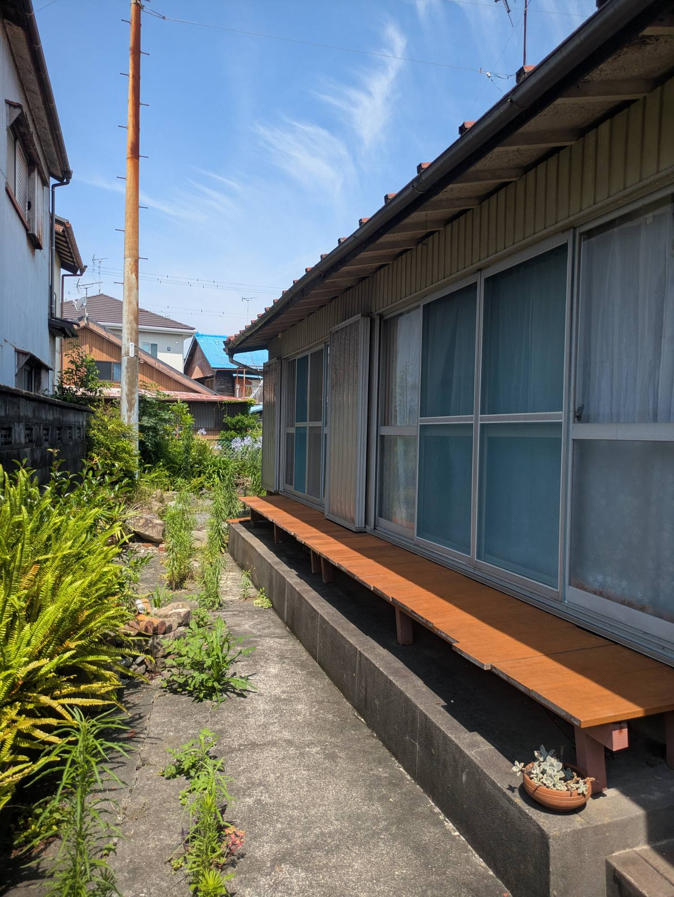

アキヤド買取プラン
受け取り方 売却代金を まとめて 受け取る 例：現地を 拝見 して査定
将来 使う 予 定がない 管理や 相続の 手間を な くしたい
住まいとして


How it works


How much?
現地を
Risk
10
比べたうえで
Message


それでも、清掃を地域の方にお願いし、セルフチェックインなどの仕組みを整えたことで、いまは現地に行くのは数か月に<
空き家は、手を入れれば旅をする人の滞在先になり、まちに人の流れを生み
★4.88
和モダンな 室内が とても オシャレで、 快適 で した！
お部屋の居心地が よく、 下田旅行の 素敵な 思い出に なり ま した。
Plans
条件は
契約は
Compare
実際の
Flow
まだ
FAQ
宿として
片付けの
売却には
比べやすいよう、
ご家族に
初回は
しつこい